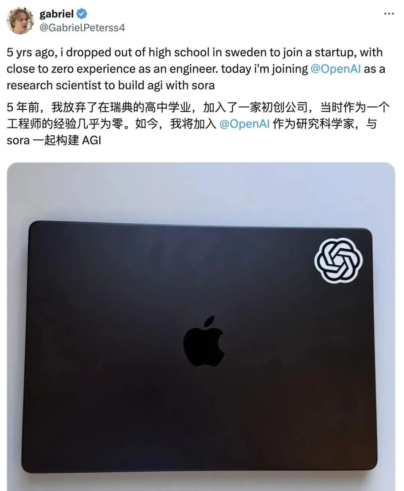
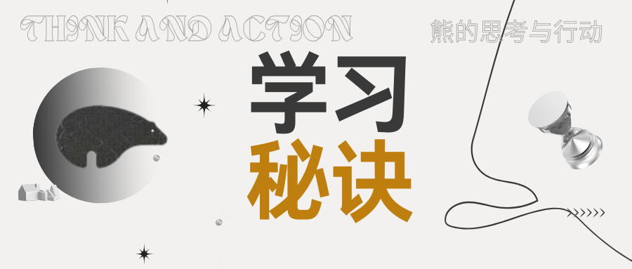

有一个神人，叫Gabriel Peterson。
他来自瑞典小镇，高中辍学。
却在辍学的5年后，加入了OpenAI，成为了一名研究科学家。

他能办到非凡的结果，必然有非凡的方法。
能带来非凡结果的方法，被称为“顶级学习法”应该不为过吧？
Gabriel是如何学习的呢？他曾说一句话：
"It takes three days to learn diffusion models top down. Six years before you can learn it bottom up."
自上而下学扩散模型只要3天，自下而上学要6年。
“自上而下”，就是他学习方法的核心。
传统方式是怎么学的？
“打好基本功”。
学machine learning，先啃几年微积分、线性代数、概率论、统计学……
学习热情没了，还不知道什么是machine learning。
Gabriel是怎样学的呢？
不断追问。
不是完全跳脱、无关的问题，而是递进的、聚焦细节的问题。
说具体一点，比如他想学Sora用的扩散模型，不是从线性代数开始。
他直接问ChatGPT："帮我写一个完整的扩散模型代码。"
先拿到一个能跑的东西。
看不懂？太正常了，这是必然的事情。
没关系，一行一行问就行：
→ "这段代码是干什么的？"
→ "这里为什么用ResNet？"
→ "什么是残差连接？为什么能让模型学得更快？"
→ "梯度是怎么流动的？用12岁小孩能懂的方式解释给我听。"
一层一层追问，问到懂为止。
正如我上一篇文章里提到的，不断向AI追问“为什么会出现这个问题”、“如何解决”、“你说的这个词是什么意思”、“如何进行这个操作，具体步骤是怎样的”。学什么都能成的秘诀：一个笔记模版（Flomo版）
根据我的实践，追问之后，能存什么内容进入Flomo才是更关键的部分。
以下模版，与你分享：
1、概念：这是什么意思？
2、问题：如何解决这个问题？
3、动作：如何进行特定动作？

有一句话是说：
“只做一次的事情，和娱乐没有区别。”
这句话放在记笔记上也同样有用：
“只写一次的笔记，和娱乐没有区别。”
如何使用Flomo进行公众号创作也会放到我的第二期公众号训练营课程之中，欢迎了解。
朋友圈会更新我的日常思考与行动，欢迎链接。
「熊的公众号训练营」第二期，开始预定。
现预定价格1480元，1月底涨价至1980元。
如感兴趣，直接扫码加好友咨询。